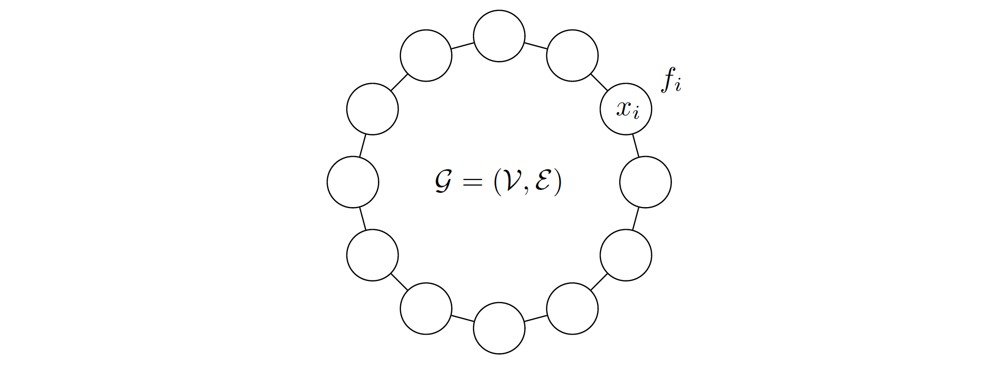

Research
Dynamical approaches to linearly constrained convex minimization
Our research pertains to the dynamical viewpoint of solving linearly constrained convex minimization problems.
 |
On the Arrow–Hurwicz differential system for linearly constrained convex minimization
S. K. Niederländer
Optimization (2023), to appearSecond-order dynamics with Hessian-driven damping for linearly constrained convex minimization
S. K. Niederländer
SIAM J. Control Optim., 59 (2021), pp. 3708-3736
Distributed coordination algorithms for convex minimization
We consider continuous-time coordination algorithms for networks of agents that seek to collectively solve convex optimization problems with an inherent distributed structure.
|  |
Distributed coordination for nonsmooth convex optimization via saddle-point dynamics
J. Cortés and S. K. Niederländer
J. Nonlinear Sci., 29 (2019), pp. 1247-1272Exponentially fast distributed coordination for nonsmooth convex optimization
S. K. Niederländer, F. Allgöwer and J. Cortés
Proc. IEEE Conf. Decis. Control, Las Vegas, NV, USA, 2016, pp. 1036-1041Distributed coordination for separable convex optimization with coupling constraints
S. K. Niederländer and J. Cortés
Proc. IEEE Conf. Decis. Control, Osaka, Japan, 2015, pp. 694-699